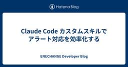

ENECHANGE Developer Blog
https://tech.enechange.co.jp/
ENECHANGE開発者ブログ
フィード

Claude Code カスタムスキルでアラート対応を効率化する
ENECHANGE Developer Blog
こんにちは、ENECHANGEエンジニアの藤巻です。 私たちのチームでは、本番環境のアラート対応にBugSnag と CloudWatchを使っています。 既知のアラートについては Notion に対応方針をまとめているのですが、慣れていないメンバーにとっては、Notion を検索して該当記事を探し、手順を読み、本番環境を確認するという一連の流れがなかなか大変です。 この記事では、Claude Code のカスタムスキル機能を使って、アラートの対応を効率化した事例を紹介します。
3日前

Corosync+PacemakerによるNginx HA構成を自立型AIエージェントで構築したかった話
ENECHANGE Developer Blog
Corosync + Pacemaker によるオンプレミス向けHA設計 PlatformEngineeringのLDRです。 Qごとに1日だけ、プロダクト開発や事業課題の解決に活用できそうな技術についてインプット／アウトプットする「I/O Day」があります。今回は、過去に構築したことのあるCorosync + PacemakerによるHA構成を、自立型AIエージェントで構築させてみようとした話です。 裏設定 SaaSばかりやってるとオンプレ案件の時に環境での構築ってこれどうやってたっけ…って浦島状態になるのでたまに棚卸しが必要。DCの機器の持ち込み制限のある区域でBIOS/UEFI設定して…
9日前
Claude Code の「Skills」で仕様書自動生成の仕組みを作った話
ENECHANGE Developer Blog
こんにちは。ENECHANGEの川野邉です。 コードは日々進化していくのに、仕様書やドキュメントが過去に取り残される。 これは多くの開発現場で起きている課題ではないでしょうか。 コードは更新されるのに、仕様書は追いつかない クライアントや非エンジニアに説明のたびにコードを読み直す ドキュメントを書いても、次の改修で更新されず陳腐化する 仕様書やドキュメントの重要性は分かっていても、開発が忙しいとどうしても後回しになりがちです。 そこで今回、コード変更のタイミングで仕様書を自動生成・更新する仕組み を作れないかと考えました。 本記事では、Claude Code の Skills 機能 を使って試…
10日前
Devin活用術 - 水平展開と横断検索で開発効率UP
ENECHANGE Developer Blog
Energy Marketing Devチームの青木です。 今回は、Marketingチームで使用しているAIツールとその活用方法についてまとめました。
17日前
【Sansan × LayerX × ENECHANGE】運用と開発を進化させるAIの実践事例【イベントレポート】
ENECHANGE Developer Blog
ENECHANGE株式会社は2026年1月29日に、オンラインイベント「【Sansan × LayerX × ENECHANGE】運用と開発を進化させるAIの実践事例」を開催いたしました。 開発や運用の現場では、プロダクトの価値に直結する作業とは別に、環境構築やオンボーディング、アラート対応、初期調査といった「避けられないが、付加価値を生みにくい作業」が日々発生します。本イベントでは、AIエージェントをこうした作業の“担い手”として組み込み、業務を再設計するためのノウハウを各社のエンジニアが紹介しました。 本記事では、イベントの内容をレポートします。
20日前
AI時代、DDDの補完サブドメインはエンジニアが作るべきか
ENECHANGE Developer Blog
こんにちは。ENECHANGEエンジニアの石橋です。 AIによって実装コストは劇的に下がりました。しかし、そこから競争優位が自動的に生まれるわけではありません。 本記事で考えたいのは、次の問いです。 AI時代、補完サブドメインは本当にエンジニアが担うべきなのか？ 結論から言えば、サブドメインの分類（コア／補完／一般）は変わりません。 変わるのは、補完サブドメインを「誰が構築するのが合理的か」という前提です。 AIによって、 補完領域の一部は、非エンジニアのドメインエキスパートでも構築可能になりつつある という現実が生まれています。
1ヶ月前
OSSのGitHubリポジトリで、やりすぎてみている話 ── DCOからRenovateまで
ENECHANGE Developer Blog
こんにちは、VPoTの岩本 (iwamot) です。 ENECHANGE発のOSSであるCollmboでは、GitHub Actionsワークフローや品質チェック機能をもりもりと活用しています。正直「やりすぎ」なくらいです。 ただ、これは意図的なものです。他のOSSやプロダクトのリポジトリではどこまでやれば充分なのか、議論の叩き台にしてもらうのが真の狙いです。 この記事では、Collmboで利用しているワークフローや品質チェック機能をご紹介します。 1. 開発プロセス DCO (Developer Certificate of Origin) CI: pip-licenses, ruff, t…
1ヶ月前
Claude Code を使いこなすためのベストプラクティス（実践検証付き）
ENECHANGE Developer Blog
こんにちは、ENECHANGEエンジニアの藤巻です。 この記事は、Claude Code 公式ドキュメントの Best Practices for Claude Code を参考に、要点を日本語でまとめたものです。「自分の作業を検証させる」「まず探索、次に計画、それからコード」「セッションを管理する」など、Claude Code を効果的に使うための9つのポイントを紹介します。 あわせて本記事では、これらのプラクティスを実際の作業フローに適用し、サブエージェントを用いたレビュー実践を通じて、実務の中でどのように機能するのかも検証した結果を紹介します。
1ヶ月前
要件が定まらない状況での設計判断 〜eValue Platformリアーキテクチャ事例〜
ENECHANGE Developer Blog
はじめに ENECHANGE株式会社でSREを担当している杉田(@Mnbvc124)です。 本記事では、環境価値管理サービス「eValue Platform」のリアーキテクチャにおける設計判断についてお話しします。 要件が不確定な中で、どのようにアーキテクチャを決めたのか。 その意思決定プロセスを共有します。
1ヶ月前
イベント履歴式ドメインモデル（イベントソーシング）とは何か
ENECHANGE Developer Blog
はじめに システム開発部でバックエンドエンジニアをしている白坂です。 弊社では、『ドメイン駆動設計をはじめよう』の輪読会を行っています。 この記事では、第7章で扱われているイベント履歴式ドメインモデル（イベントソーシング）について自分の理解を整理します。 これからDDDを学ぶ方の参考になれば幸いです。
1ヶ月前
Claude Code GitHub Actionsによるエラー初期分析を横展開した際の工夫点
ENECHANGE Developer Blog
こんにちは、VPoTの岩本 (iwamot) です。 同僚の片田さんによる「Claude Code GitHub Actionsを用いてエラーの初期分析効率化を目指す」では、Sentryに通知されたエラーを生成AIで初期分析する取り組みが紹介されていました。 ENECHANGEではSmartBear Software社のBugSnagをエラー監視に使っているプロダクトも多いので、同様に初期分析の仕組みを作ってみました。 本記事では、BugSnagエラー初期分析フローの全体像と、横展開する際に工夫したポイントをご紹介します。
2ヶ月前
AWS Glue + Iceberg で電力データを取り込み、処理時間を計測してみた
ENECHANGE Developer Blog
はじめに 以下の記事で、AWS Glue と Iceberg を用いて分析基盤を作成してみました。 本記事では、この分析基盤に対して 1万〜15万件 のデータを取り込み、以下の観点で検証します。 Glue Job の処理時間（XML パース → Iceberg MERGE）の計測 データ量に対する処理時間のスケーリング傾向の把握 ワーカー数（並列度）による効果の確認 tech.enechange.co.jp
2ヶ月前
GitHub CopilotでPRレビュー時のOWASP Risk Rating評価を自動化
ENECHANGE Developer Blog
最近ゴルフスコア⛳️79を出せたldrです。アベレージ70台を目標に頑張ります🏌️♂️ はじめに Infrastructure as Code（IaC）のセキュリティレビューで「このIAM権限、どれくらい危険？」「0.0.0.0/0で公開するリスクは？」といった疑問に、定量的に答えられていますか？ 主なリスク評価手法として下記が挙げられますが、OWASP Risk Rating Methodologyに基づいたPRレビューガイドを作成し、GitHub Copilotで自動化することで、セキュリティリスクを0-9のスコアで定量的に評価できるようにしました。これにより手動入力コストを最小化し、リ…
2ヶ月前
Egress-Only IGWで、コスト増なしにRDSをプライベート化した話
ENECHANGE Developer Blog
こんにちは、VPoTの岩本 (iwamot) です。 事情によりパブリックアクセスを有効化していたAmazon RDSのDBインスタンスがあったのですが、パブリックアクセス不要となったため、プライベートサブネットに移行しました。 その際、Egress-Onlyインターネットゲートウェイ (以下、Egress-Only IGW) を活用することで、有料のNATゲートウェイやVPCエンドポイントを追加することなく、移行を完了できました。 本記事では、移行の背景や、実際の移行手順をご紹介します。
2ヶ月前
DeepWikiを使ってOSSのコードリーディングを効率化する
ENECHANGE Developer Blog
こんにちは。 2026年1月にENECHANGEに入社いたしました、エンジニアの杉山です。 現在は既に展開されているSaaSプロダクトのリアーキテクトプロジェクトに参画しております。 リアーキテクトを進める中で強く感じているのが、 自社プロダクトの仕様理解と同じくらい利用しているOSSの理解が重要であるということです。 OSSを表面的な使い方だけで捉えていると 今の構成は最適なのか 要件的に別のライブラリで十分ではないか といった判断を根拠を持って行うことが難しくなります。 本記事では、そうした実務の中でOSSのコードリーディングを効率よく進めるために、私がDeepWikiをどのように活用して…
2ヶ月前
安全性の高い「Docker Hardened Images」を運用して気づいた点
ENECHANGE Developer Blog
VPoTの岩本 (iwamot) です。 Docker Hardened Images (DHI) は、Docker社が公開している安全性の高いイメージ群です。2025年5月のリリース当初は有償版のみでしたが、2025年12月に無料版も提供開始されました。 ぼくが開発しているAI Slack bot「Collmbo」も、ベースイメージをDocker公式の「python」から、DHIの「dhi.io/python」に移行済みです。 本記事では、移行によって安全性がどれだけ高まったのか、また、実際の運用でどのような点に気づいたかをご紹介します。
2ヶ月前
ECS/FargateのSOCI Index Manifestをv1からv2に移行した理由と方法
ENECHANGE Developer Blog
VPoTの岩本 (iwamot) です。 ENECHANGEでは、AWS FargateでのAmazon ECSタスク起動を速くするため、Seekable OCI (SOCI) を利用しています。 tech.enechange.co.jp このたび、SOCI Index Manifestのバージョンをv1からv2に移行しました。 本記事では、なぜ移行したのか、どのように移行したのかをお伝えします。
2ヶ月前
定期実行AIエージェントをLambdaからAgentCore Runtimeに移行した理由と方法
ENECHANGE Developer Blog
VPoTの岩本 (iwamot) です。 本ブログの新着記事をレビューしてくれるAIエージェント「ブログほめ太郎」について、実行環境をAWS LambdaからAmazon Bedrock AgentCore Runtimeに移行しました。 今回の記事では、なぜ移行したのか、どのように移行したのかをお伝えします。
2ヶ月前
Goの暗黙的なインターフェース原則はクリーンアーキテクチャと矛盾するのか？
ENECHANGE Developer Blog
はじめに こんにちは、ENECHANGEエンジニアの木原です。 今回はGoによるクリーンアーキテクチャの実装を見ていて、疑問に感じたこと、そこから得た気づきを共有したいと思います。 Goの実装は以下のリポジトリを参考にしました。 github.com 結論 クリーンアーキテクチャとGoのインターフェースの原則は相反するように見えるが、そもそもの目的が異なる。 Goの暗黙的なインターフェースに従うことで、クリーンアーキテクチャの目的もある程度達成できる。
3ヶ月前
クライアント案件単位で開発を管理する「プロジェクト駆動開発」ワークフロー
ENECHANGE Developer Blog
はじめに 弊社では複数のクライアントが利用するAPIを開発・運用しているのですが、たまにこんな課題に直面することがあります。 「この機能、どのクライアントの要望で追加したんだっけ？」 「なぜこの設計判断をしたのか、当時のSlackを探しても見つからない...」 「新メンバーに経緯を説明したいけど、ドキュメントがない」 私たちのチームではこれらの課題を解決するために「プロジェクト駆動開発」とも呼べるワークフローを導入しました。 本記事ではその概要と実際に運用してみて感じたメリット・デメリットを紹介します。
3ヶ月前
AWS Glue + Iceberg で分析基盤を構築し、電力データを取り込んでみる
ENECHANGE Developer Blog
はじめに データレイクのテーブルフォーマット Apache Iceberg というものがあると知りました。 Icebergは、大規模な分析テーブル向けの高性能フォーマットです。IcebergはSQLテーブルの信頼性と簡便性をビッグデータにもたらすと同時に、Spark、Trino、Flink、Presto、Hive、Impalaといったエンジンが、同じテーブルを同時に安全に操作できるようにします。 弊社プロダクトの中には大量の電力使用量データを扱うものもありParquetファイルを利用しているのですが、電力需要家ごとにParquetファイルを分割し、編集時にはPythonでParquet ファイ…
3ヶ月前
CloudFront Functionsの新機能 rawQueryString() がマネコンだと空になる件（仕様でした）
ENECHANGE Developer Blog
「AWS Community Builders Advent Calendar 2025」17日目の記事です。 VPoTの岩本 (iwamot) です。 2025年11月、CloudFront Functionsで rawQueryString() というヘルパーメソッドが使えるようになりました。 aws.amazon.com 名前のとおり、リクエストURLのクエリストリングをそのまま取得できるメソッドです。 Case 1: Full query string returned (without leading ?) Incoming request URL: https://example.…
3ヶ月前
Devin に Buildkite MCP を設定して自律的に CI 失敗の修正をしてもらう
ENECHANGE Developer Blog
Devin を使った開発において、CI の結果確認は重要なフィードバックループの一つです。 しかし、通常 Devin は CI の失敗の検知まではしてくれますが直接 Buildkite の情報にアクセスして CI の失敗原因を確認するところまではやってくれません。 CI の情報をベースにした修正を依頼するためには人間が介入する必要があり、自律的な問題解決が難しくなります。 この記事では、Buildkite MCP Server を Devin にセットアップする手順を紹介します。 これにより、Devin が自律的に Buildkite のビルド状況やログを確認できるようになります。
3ヶ月前
2025年版 Git最新情報まとめ ― last-modifiedからRust導入まで
ENECHANGE Developer Blog
はじめに ENECHANGEでバックエンドエンジニアをしている白坂です。 日頃Gitを使っていると、「とりあえず動くからOK」で済ませてしまい、 新機能やアップデートを追わなくなりがちですよね。 今回、2025年のリリースノートを確認してGitの更新内容をキャッチアップしてみました。 結論としては、日常的な利用に大きな影響はありませんが、 押さえておくと役に立つ新機能 があったため、ここにまとめます。
3ヶ月前
NestJS入門
ENECHANGE Developer Blog
こんにちは、エンジニアの清水です。 普段はフロントエンドを中心に開発していますが、最近はNestJSを使ったバックエンド開発にも携わるようになりました。 少し触ったことはあったものの、業務で本格的に使うのは初めてだったため、学んだことを整理してみました。 NestJSを学び始めた方や、フロントエンドからバックエンドに領域を広げたい方の参考になれば幸いです。
4ヶ月前
AIエージェント運用費がほぼ半減した、マルチエージェントへの移行事例
ENECHANGE Developer Blog
「AIエージェント構築＆運用 Advent Calendar 2025」1日目の記事です。 こんにちは、ENECHANGE VPoTの岩本 (iwamot) です。 AIエージェントの運用費、なるべく抑えたいですよね。 もし複数ステップを処理させているシングルエージェントがあれば、マルチエージェント構成に変えることで、費用を大きく減らせるかもしれません。 本記事では、移行によって費用を43%減らした実例を詳しくお伝えします。
4ヶ月前
SLA要件を満たすディザスタリカバリ構成 —— 東京-大阪リージョン間の切り替え設計
ENECHANGE Developer Blog
ENECHANGE SREチームの杉田 青哉です。 今回は、SLA要件を満たすために実施したマルチリージョンでのディザスタリカバリ対応について紹介します。 東京リージョンで運用しているシステムを、障害時に大阪リージョンへ切り替える構成を構築しました。 戦略の選定から実装、運用まで、実際に取り組んだ内容をお伝えします。
4ヶ月前
Claude Codeの会話を体系的に管理する仕組みを作ってみた
ENECHANGE Developer Blog
初めまして。10月より ENECHANGE にジョインした藤巻です！ Claude Codeには標準でセッション管理機能が搭載されており、過去の会話を再開できます。しかし、日常的に使う中で「わかりやすい名前でトピックを管理したい」「Markdownで読みやすく整理したい」と感じることがあり、独自のトピック管理の仕組みを作りました。 本記事では、標準機能を紹介した上で、私が不便に感じた点と、それを解決するために作った仕組みを紹介します。
4ヶ月前
octocovでコードカバレッジ計測を始めよう ー 複数リポジトリでも簡単管理！
ENECHANGE Developer Blog
ENECHANGEのSRE Infraチームの id:tockeysan です。 先日のAIリレーブログではClaude Codeを利用してOSSを読み、弊社に合ったoctocovの使い方を模索した話をしました。 CluadeCodeでOSSを読み解く - 導入時のエラーに立ち向かう - ENECHANGE Developer Blog この記事はそのoctocovの導入編になります。
4ヶ月前
Claude Code on the webを使ってみました
ENECHANGE Developer Blog
おはようございます。こんにちは。こんばんは。 システム開発部 エンジニアの川野邉です。 私たちのチームでは、AIエージェントとして「Devin」を利用しています。 そのため今回、同じくAIがコードを生成・修正まで支援してくれる Claude Code on the web が発表されたと聞き、比較の観点から実際に触ってみることにしました。 docs.claude.com 2025年10月21日に公開されたClaude Code on the webは、従来のCLI版やローカル開発向けエディタ拡張とは異なり、 ブラウザだけでコードの読み書き・編集・PR作成までを完結できる点が特徴です。 本記事で…
4ヶ月前